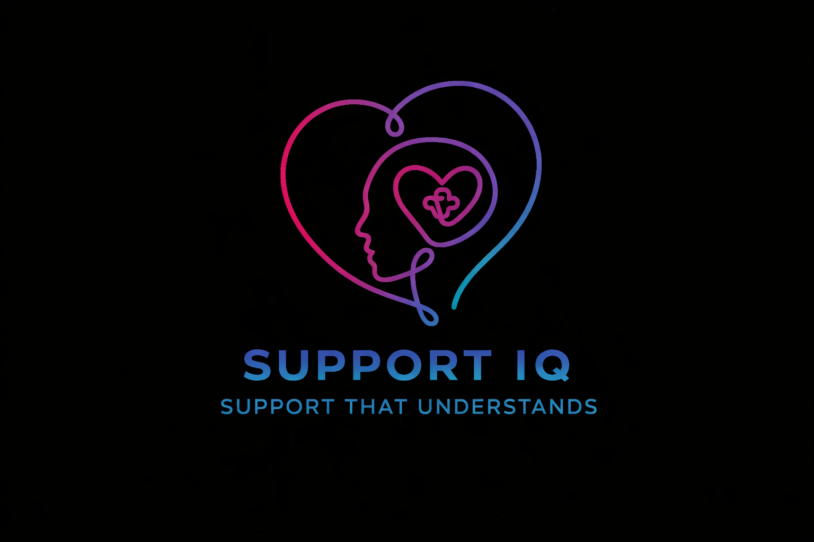

Supported living
Flexible, person-centred support that helps individuals build confidence, maintain stability and live with greater choice in the place they call home.
Independence with the right structure
SupportIQ
SupportIQ delivers home care, supported living and complex healthcare with warmth, structure and a clear understanding of what quality support should feel like in everyday life.

Built around people
SupportIQ believes good home care is never one-size-fits-all. It begins with understanding the person, their routines, their goals and the kind of support that helps them feel safe, respected and in control.
That thinking runs through every service, from day-to-day home care to supported living and more specialist healthcare support. The focus stays the same: thoughtful care, consistent communication and support that genuinely fits.
Services
Flexible, person-centred support that helps individuals build confidence, maintain stability and live with greater choice in the place they call home.
Independence with the right structure
Thoughtful support for more complex needs, delivered by a team that understands how to balance clinical awareness with reassurance, dignity and consistency.
Capable support when care is more involved
Individualised support built around communication, routine, trust and understanding, helping people feel known, respected and genuinely supported in their day-to-day lives.
Person-led support that respects individuality
Responsive support shaped around the individual and their household, whether that means practical day-to-day care, routine-building or a more specialist package that grows with changing needs.
Practical, consistent and built around the person
Approach
SupportIQ is shaped by people who understand care delivery from the inside out. The team brings real frontline knowledge, operational grip and a strong sense of what excellent support should look like from the first conversation onward.
That means thoughtful matching, clear communication, dependable coordination and standards that stay high long after support begins.
Support is shaped around personality, communication style, routines and the environment around the individual, not just a task list.
The team is comfortable working where support requires more structure, close attention and experienced coordination.
Families and individuals benefit from a service that stays responsive, dependable and grounded in respectful relationships.
The team behind SupportIQ
SupportIQ is built around a team that takes pride in doing things properly. There is depth of experience behind the service, strong care instincts behind every decision and a clear belief that people deserve support which is both compassionate and well-organised.
The result is a service that feels professional without ever losing the human touch: attentive, capable and focused on getting the details right.
Experienced leadership with a sharp understanding of quality care.
Strong specialist awareness across supported living and complex needs.
High standards, clear communication and person-led decision-making.
How SupportIQ works
We begin with the person, their routines, preferences, risks and the outcomes that matter most to them and the people around them.
From service design to team matching, the support plan is built with intention so it feels stable, practical and genuinely appropriate.
Good care is not static. SupportIQ stays attentive, communicates clearly and adapts when needs, routines or circumstances change.
Start a conversation
Whether the need is day-to-day home care, supported living or more specialist support, the focus stays on thoughtful planning, the right people and care that feels genuinely dependable.
Ideal starting points for an enquiry